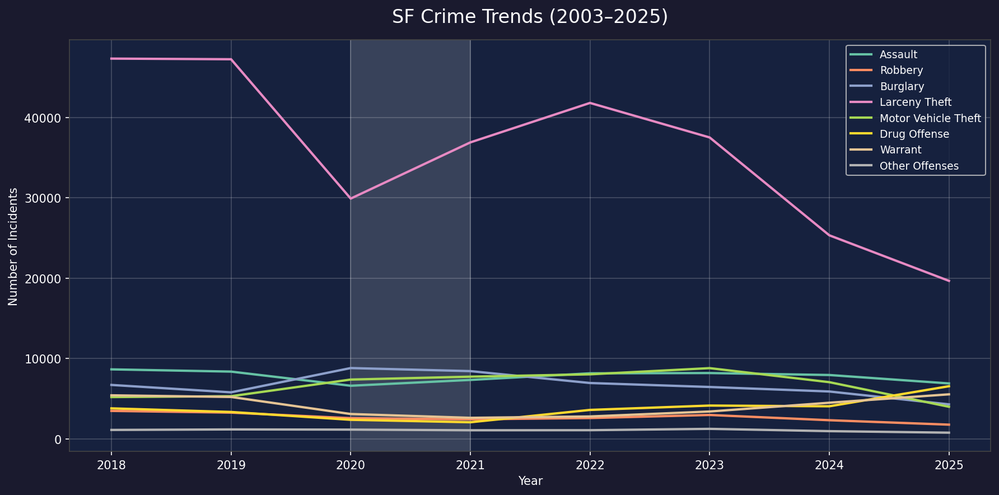

Exploring patterns, hotspots, and trends in San Francisco crime data from 2003 to 2025 — across time, space, and category.
Choropleth maps show how different crimes cluster across San Francisco's 10 police districts. Folium heatmaps and scatter plots let you zoom into individual hotspots.
Which districts see disproportionately more (or fewer) larceny thefts than the city average? A ratio above 1 means the district is a hotspot.
Open map →Planning where to park on a Sunday? This map shows vehicle theft counts by district, revealing which neighborhoods are highest risk.
Open map →Individual drug offense incidents plotted as points for a two-month window, revealing spatial clusters at the street level.
Open map →A density heatmap of all assault incidents across the full 22-year period, showing where violence is persistently concentrated.
Open map →These interactive Plotly charts let you compare hourly distributions across crime types, and see how patterns have shifted year by year. Click legend items to toggle traces on and off.
What hour of the day is each crime type most likely to occur? Click on crime types in the legend to build up comparisons one layer at a time.
Explore chart →Watch how hourly crime patterns have evolved across two decades. The COVID-19 years (2020–2021) are clearly visible as disruptions. Press play and observe.
Watch animation →Yearly incident counts for the eight focus crimes, plotted from 2003 to 2025. The COVID-19 dip in 2020 is visible across nearly every category. Larceny theft dominates in volume but has been declining since its mid-2000s peak.
Warrant-related arrests show a sharp rise in the 2010s, while drug offenses spike and then fall — consistent with shifting enforcement priorities across multiple mayoral administrations.
Full-size image →
This site presents analysis of San Francisco Police Department incident reports covering 2003 to 2025 — two datasets merged and cleaned for consistent category mapping across time.
The eight crime types analysed throughout the course:
SFPD Incident Reports: two open datasets from the City of San Francisco, covering 2003–2018 (historical) and 2018–present, merged on shared incident identifiers and unified category names.
SF Open Data →Analysis in Python (pandas, matplotlib). Interactive maps via Plotly Express and Folium. Site hosted on GitHub Pages — zero build tools, plain HTML and CSS.
DTU 02806 — Spring 2026